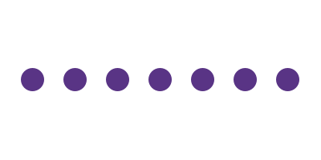
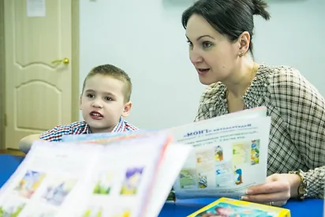
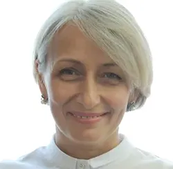
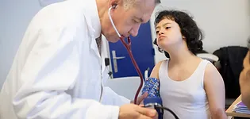

Курс повышения квалификации «ЛогоИнтернатура»
Стань экспертом в коррекционной работе с детьми с ЗРР, ЗПР, РАС, алалией и СДВГ.
Учитесь в самой крупной сети детских логопедических центров в России. Основана в 2012 году

Осваивайте практические навыки работы с детьми от 2.5 лет с тяжелыми речевыми и поведенческими нарушениями, стажируясь в центрах Детской академии речи
Получите удостоверение о повышении квалификации государственного образца (государственная лицензия №038824)
Этот курс для вас будет интересен, если Вы:
- Логопед
- Психолог
- Педагог
- Нейропсихолог
- Специальный педагог
- Социальный педагог
- Тьютор
- Родитель


Куратор курса Данекина Варвара Викторовна
Руководитель методического отдела «Детская академия речи», ЦРН «ДокторНейро» и логопедического детского сада «ДАРвиль»
Опыт педагогической деятельности более 25 лет
Образование:
- БГПУ им. Петровского – специальность «Педагогика и методика начального образования», квалификация «Учитель начальных классов».
- МГПУ – специальность «Логопедия», квалификация «Учитель-логопед».
- РГСУ – программа «Клиническая психология», квалификация «Клинический психолог».
- Институт коррекционной педагогики РАО – программа «Коррекционно-развивающее обучение детей с задержкой психического развития дошкольного и младшего школьного возраста» со специализацией «Специалист системы коррекционно-развивающего обучения».
- Междисциплинарный системный подход в коррекции речевых нарушений у детей раннего и дошкольного возраста
- Разбор основных нарушений. Часть 1: темповая ЗРР, ОНР II-III уровня, ФФН, дислалия
- Разбор основных нарушений. Часть 2: моторная и сенсорная алалии, ОНР I, РАС, ЗПР, СДВГ
- Карта развития ребенка. Анамнестический лист: цели, анализ данных перинатального и постнатального периода
- Классическая схема обследования и необходимые дидактические пособия
- Анализ результатов диагностики. Кейсы
- Дифференциальная диагностика. Часть 1: ЗРР — моторная алалия. РАС — сенсорная алалия
- Дифференциальная диагностика. Часть 2: Алалия — тугоухость. Речевое недоразвитие в составе сложной структуры дефекта
- Нейропсихологический подход: стадии созревания высших психических функций до появления нормативной речи
- Особенности онтогенеза дошкольного и младшего школьного возраста
- Работа с семьей. Речевое нарушение как семейная системная проблема
- Методические приемы, дидактические пособия и игры в коррекционной работе логопеда-дефектолога
- Маршрут коррекции: составление индивидуального плана работы с ребенком (логопед-дефектолог)
- Маршрут коррекции: составление индивидуального плана работы с ребенком (нейропсихолог)
- Специалист и ребёнок: установление контакта и доверия
- Формирование понимания обращенной речи и инструкций
- Вызывание звуков и речевой активности, стимуляция произвольной речевой активности, голосовых реакций
- Развитие потребности в речи, накопление словарного запаса
- Развитие познавательной сферы
- Развитие эмоционально-волевой сферы
- Развитие моторики (общей, мелкой, артикуляционной)
- Специфика работы логопеда-дефектолога с детьми с ЗРР
- Специфика работы логопеда-дефектолога с детьми с ЗПРР
- Специфика работы логопеда-дефектолога с детьми с гиперактивностью, СДВГ
- Специфика работы логопеда-дефектолога с детьми с моторной алалией
- Специфика работы логопеда-дефектолога с детьми с сенсорной алалией
- Специфика работы логопеда-дефектолога с детьми с расстройством аутистического спектра
- Обзор дополнительных реабилитационных методов: баламетрикс, ТМС, Томатис
- Диагностическое занятие с ребенком 4,5 лет
- Практическое занятие с ребенком с ОНР I
- Практическое занятие с ребенком с ЗРР
- Практическое занятие с ребенком с ЗПРР
- Практическое занятие с ребенком с алалией
- Практическое занятие с ребенком с СДВГ
- Практическое занятие с ребенком с ОНР III при ЭВН
- Практическое занятие с ребенком с РАС
- Диагностическое занятие с ребенком 6 лет
- Нейропсихологическая коррекция с ребенком с РАС и гиперактивностью
Программы обучения
Курс 72 часа
Форма обучения очно-дистанционная
- Видеолекции
- Практический видеокурс - разбор кейсов
- Стажировка в центрах Детской академии речи
- Поддержка и консультация Старшего методиста
- Чат единомышленников: бессрочная поддержка наших выпускников в закрытом чате со Старшим методистом
- Практическая работа: написание заключений по результатам диагностики, конспектов занятий, коррекционно-развивающих программ
- Промежуточное тестирование
- Итоговая аттестация
- Выдача удостоверения государственного образца о повышении квалификации
Курс 52 часа
Форма обучения дистанционная
- Видеолекции
- Практический видеокурс - разбор кейсов
- Стажировка в центрах Детской академии речи
- Поддержка и консультация Старшего методиста
- Практическая работа: написание заключений по результатам диагностики, конспектов занятий, коррекционно-развивающих программ
- Промежуточное тестирование
- Итоговая аттестация
- Выдача удостоверения государственного образца о повышении квалификации

Стажировка 22 часа
Форма обучения очная
- Стажировка в центрах Детской академии речи
- Поддержка и консультация Старшего методиста
- Выдача удостоверения государственного образца о повышении квалификации
Наши лицензии: